本博客旨在学习如何对使用SGLang服务的LLM进行性能分析，并利用其开箱即用的内置Torch Profiler集成。思路是：当我在命令行执行SGLang serve时，能否识别CPU侧和GPU侧的事件，并理解“我的时间和计算主要用在哪里？”这个问题。
作为系列博客的第一篇，我使用单个NVIDIA L4 GPU上的Qwen3.5-0.8B模型，这样算力较弱的用户也能进行性能分析并跟进。除了模型较小之外，它还包含许多较新的架构设计，使trace仍然可读。
This blog is my attempt to learn how to profile an llm served using sglang and its in built torch profiler integration that comes out of box. The idea here would be try and understand when I hit sglang serve on my command prompt, can I recognize the CPU side and GPU side events and understand the question "where is most of my time and compute going?"
For this first of many blogs, im using Qwen3.5-0.8B on a single NVIDIA L4 GPU, so a lot of people with lesser compute can also profile and follow along. Besides being a small model, it also has a lot of the newer architecture designs and makes the trace still readable.
Before opening the profiler, it helps to know what patterns/layers we expect to see. Make sure you understand the model very well. For this run, the important model stats are
parameters - 0.8B
hidden dim - 1024
embedding dim - 248k
layers - 24
a pattern of 6 groups of 3 x (Gated DeltaNet + FFN) followed by 1 x (Gated Attention + FFN)
context length - 262k tokens
this means using bf16, the weights take about -
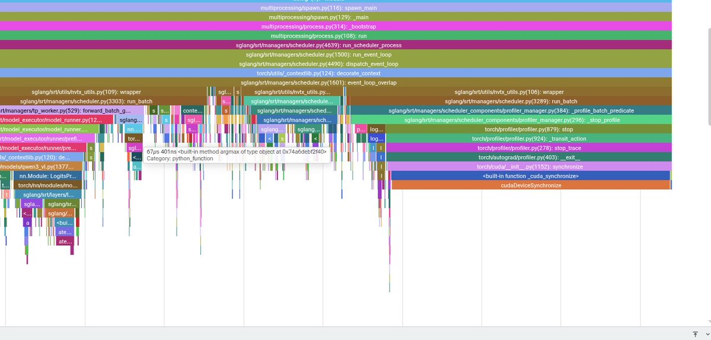
For batch size 1 decode, we can do a basic math roofline check to understand what kind of bottleneck to expect.
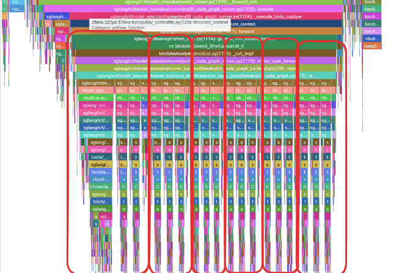
The compute roof is way higher than the bandwidth roof. So before looking at any trace, my starting assumption is that for batch size 1 decode, this workload is going to be much closer to memory bound than compute bound. The profiler should either confirm that or explain why that mental model is wrong.
Now we make use of the profiling endpoint to record CPU and GPU activities and seperate the prefill and decode into two traces so its easier to read.
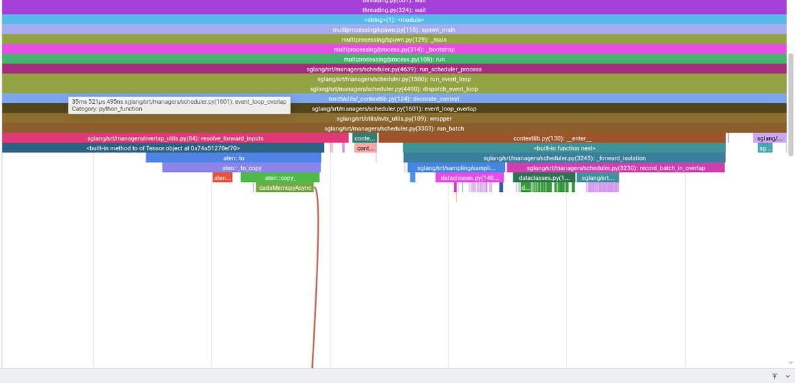
Here I say wait for 5 steps (warmup), then profile the next 2 steps. The profiler captures two forward passes during decode.
curl -X POST http://127.0.0.1:30000/start_profile \
-H "Content-Type: application/json" \
-d '{
"output_dir": "/workspace/traces",
"start_step": 5,
"num_steps": 2,
"activities": ["CPU", "GPU"],
"profile_by_stage": true,
"record_shapes": true,
"with_stack": true
}'Then I sent a single request with the serving benchmark
python -m sglang.bench_serving --backend sglang --num-prompts 1By the way something to keep in mind, CUDA launches are asynchronous. This means the CPU timeline can show a kernel launch earlier, while the actual kernel runs later on the GPU lane and this intially tripped me up a lot. So when reading the trace, I mostly stuck to reading the CPU side first to understand who launched the work, and the GPU side to understand where the device time went.
To view the traces, open Perfetto UI and load the trace files generated after profiling.
This is the full prefill region for our single request. Prefill is the phase where the model consumes the prompt tokens and produces a single token. The top half of the profiler has the CPU side operations and lower half is the GPU side operations.
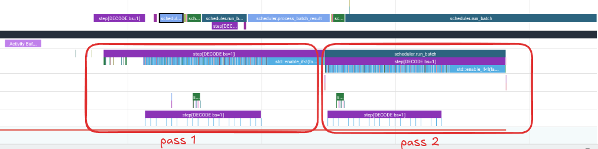
Are you able to spot your first pattern? The peaks seem to be grouped into 3 with a smaller peak in between. Another striking thing is the first peak being way bigger compared to the others. Keep this in mind and we will unravel each feature as we progress in the blog.
Cool, if you scroll into the tinier peak to the left most side and zoom in a bit, you will see a lot of setup work. This includes starting the torch profiler, sglang getting ready to prepare the batch of inputs, setting up CUDA streams everything lining up to run the forward pass.
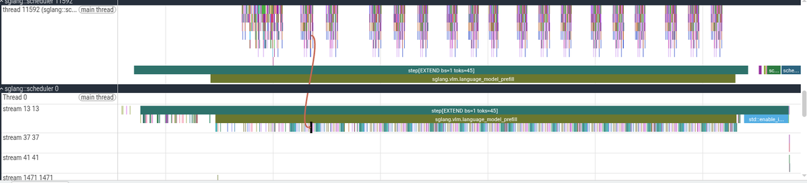
Another cool thing you can do is if you want to know the kernel a particular cpu activity launched, you can click on the operation and it will link you to the exact kernel it launched with some information.
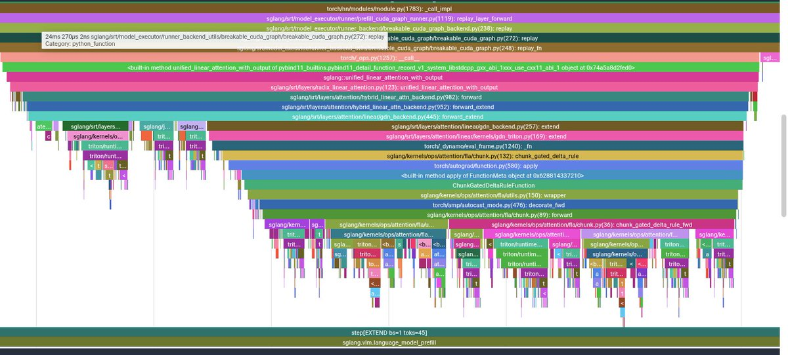
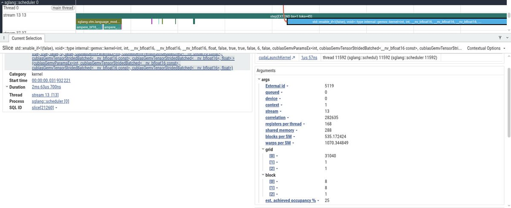
In this case, we can see a host-to-device copy from pinned CPU memory to the GPU. For this run it is probably request metadata, token ids, or some small tensor needed by the scheduler.
Now we are inside the main prefill compute region. Remember from the zoomed out view we had these repeating peaks but they appear in groups. Well, these peaks are not random and if you remember the model architecture, these peaks matches exactly the group structure we had.
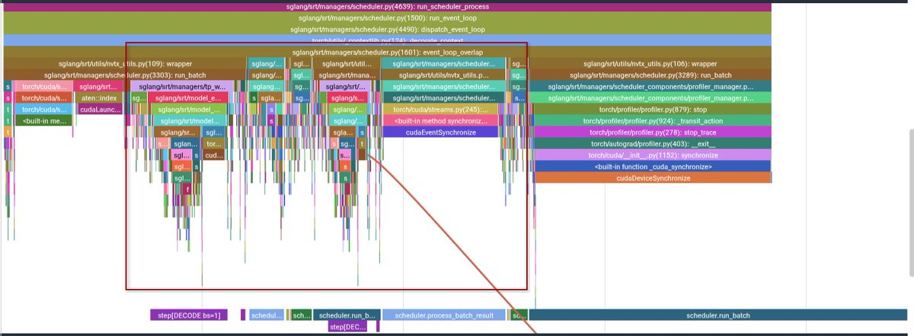
To jog your memory a bit, Qwen3.5-0.8B has 6 repeated groups. Each group has 3 Gated DeltaNet blocks followed by 1 full-attention block. So in the profiler, I expect to see something like -
[GDN + FFN] [GDN + FFN] [GDN + FFN] [Attention + FFN]
[GDN + FFN] [GDN + FFN] [GDN + FFN] [Attention + FFN]
... repeated 6 times
Now, let's zoom into the first peak and see what operations are going on in there.
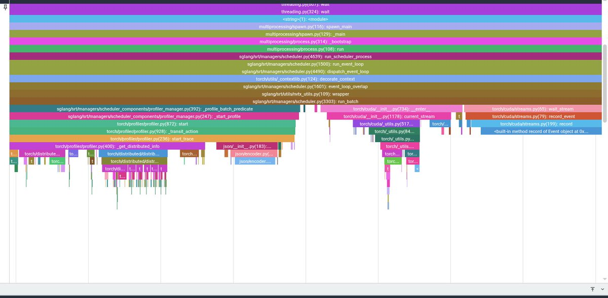
Why do I think the first peak in the first group is way larger than the others? My assumption is going to be that the first hybrid block usually has some extra setup cost compared to the other blocks.
Now scroll onto the next 2 peaks and the smaller peak within the first group.
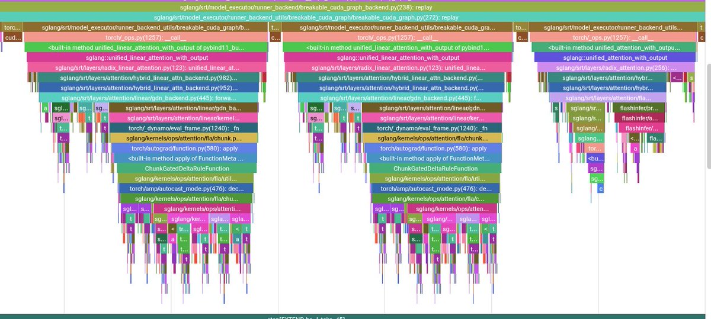
These are the GDN blocks including kernels like -
causal_conv1d_fn
fused_qkv_split_gdn_prefill
fused_gdn_gating
ChunkGatedDeltaRuleFunction
l2norm_fwd
chunk_local_cumsum
chunk_gated_delta_rule_fwd_kkt_solve
recompute_w_u_fwd
chunk_gated_delta_rule_fwd_h
chunk_fwd_kernel_o
You can also verify this by clicking on the kernels in the GPU section
The smaller fourth peak is the full-attention block which uses FlashInfer. For this short prompt of 45 tokens, full attention is not actually the bottleneck.
Pattern alert! From the kernels section, we have repeating green thick sections and towards the end a final big blue kernel. Keep this mind for the next section.
memory bandwidth for my gpu = 300 GB/s
weights to move per token = 1.6 GB
bandwidth limited throughput = 300 / 1.6
= 187.5 tokens/s
For compute, a very rough inference estimate is around 2P FLOPs per token.
FLOPs/token = 2 * 0.8B = 1.6 GFLOPs
bf16 tensor throughput ~ 121 TFLOP/s
compute-limited throughput = 121000 / 1.6
= 75k tokens/sIf you push past the whole repeating peaks into the final section, the server moves into cleanup and prepares for decode. This includes the final projection to logits, sampling, and copying the result back to CPU. This section is easy to ignore, but in this trace the logits processor contains one of the most expensive kernels.
If you click the CPU side aten::mm and expand the args, PyTorch shows:
Input type: ['c10::BFloat16', 'c10::BFloat16'] Input strides: [[1024, 1], [1, 1024]] Input dims: [[1, 1024], [1024, 248320]]
Conceptually, this is:[1, 1024] @ [1024, 248320] = [1, 248320]
Since the vocab size is huge, this turns into a large matrix vector style projection. Even though it runs only once during prefill for this prompt, it is still one of the slowest kernels in the section.
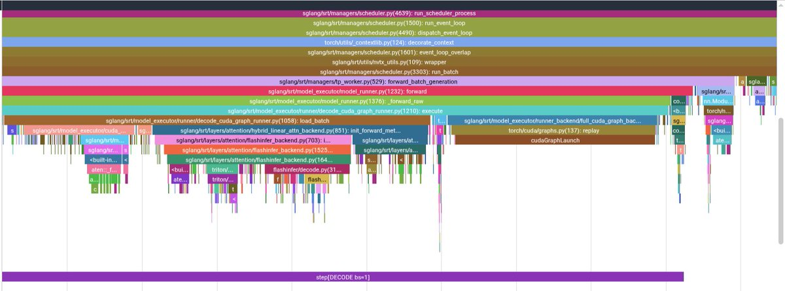
The kernel details are also quite useful to read (you can do more with Nsight)
grid: [31040, 1, 1] block: [8, 8, 1] registers/thread: 168 shared memory: 288 occupancy: 25%
What's this grid shape? 248320 vocab elements / 8 = 31040
Cool, the final linear head is projecting one 1024 wide hidden vector across a very large vocab dimension. If I were optimizing this path, I would look closely at whether this projection can be fused or look for similar optimizations.
Now let's look at the most prominent kernels that are running in this workload.
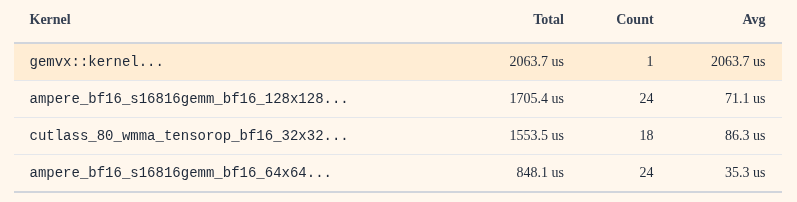
The final gemv kernel is indeed the most expensive despite being invoked only a single time. The 128x128 BF16 GEMM appears 24 times, which lines up with one large projection-style operation per block. The smaller CUTLASS BF16 GEMM appears 18 times, which lines up nicely with the 18 GDN blocks.
Kernel names alone can be quite noisy and hard to understand sometimes, so understanding the model layout and data flow together can make the trace much easier to reason about.
0.8B parameters * 2 bytes = 1.6 GBDecode is a different workload compared to prefill. During prefill, the model processes the entire prompt sequence so many operations have enough work to become decent GEMMs. But during decode with smaller batch sizees, the model is mostly processing one new token at a time and a lot of projection work collapses into skinny matrix vector operations.

In this trace, the highlighted region is the important part. The surrounding regions is mostly profiler setup/shutdown, input setup, synchronization, and bookkeeping. Those are worth understanding, but they are not the main model compute path.
apt-get update
apt-get install -y cuda-toolkit-13-2
uv venv
source .venv/bin/activate
uv pip install --prerelease=allow sglang
sglang serve --model-path Qwen/Qwen3.5-0.8BOn the left, SGLang loads the batch and copies this decode step's inputs into fixed CUDA graph buffers. In the middle is where the actual decode work happens. Suprise surprise! Unlike prefill, the CPU timeline does not show every model layer as a deep stack of individual launches, because the decode path is using CUDA graph replay.
Before the graph replay, there are a few small kernels and copies for setup. These are not the layer stack. They are mostly preparing the fixed buffers and execution state needed by the captured graph.
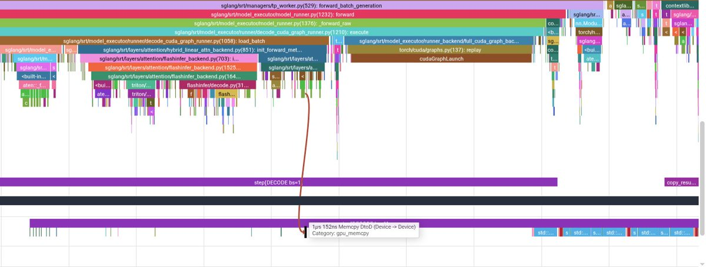
Once you click into the graph replay region, the GPU kernels become visible under that replay. This is the view that matters for decode.
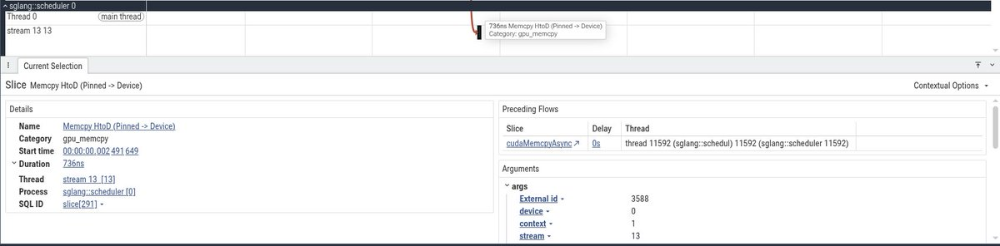
Perfetto UI地址：https://ui.perfetto.dev/
The repeated blue bars are the same GEMV family we saw around the vocab projection. In the decode phase, they just keep showing up and this is because for a batch size 1 decode, it simply turns many linear layers into matrix-vector style operations.
This is the core performance issue. GEMV has much lower arithmetic intensity than a large GEMM. You stream a lot of weights from memory, but there is not enough reuse to keep the tensor cores busy in the same way a chunky prefill GEMM can. So even on a GPU with plenty of compute, the decode path can become memory-bandwidth limited.
The tiny red/green/purple blips are other kernels from the hybrid blocks which are important, but for this batch size 1 run, the shape of the trace is mostly screaming one thing - the decode path is a long sequence of skinny projections.
This also explains why batching changes the story. If you increase batch size, some of these skinny operations become less skinny. The workload gets closer to GEMM-like behavior, and the GPU has more opportunity to reuse weights and do useful math per byte loaded. That does not make batching free, because KV cache, latency, scheduling, and memory pressure all matter, but it explains why single-request decode is such a hard shape for GPUs.
Where to go from here?
The next step from here would be to repeat this analysis with larger batches and longer prompts. That would separate which bottlenecks are specific to batch size 1 decode from the ones that stay painful even when the GPU has more parallel work to chew on.
参考：https://x.com/jino_rohit/status/2085947942339563598